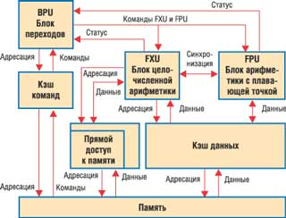
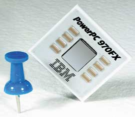
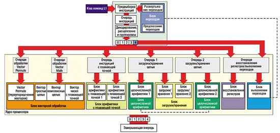

Владислав Шаров
Как известно, ключевую роль в создании семейства микропроцессоров PowerPC сыграла корпорация IBM (http://www.ibm.com). За основу создаваемого семейства был взят ее процессор POWER (Performance Optimization With Enhanced RISC). Вообще говоря, в развитие фундаментальной концепции RISC-архитектуры существенный вклад внесли ученые из Исследовательского центра IBM, где в середине 70-х был разработан мини-компьютер IBM 801. Дальнейшее развитие этих идей как раз и нашло отражение в концепции POWER в конце 80-х гг. Впоследствии именно эта архитектура стала основой нескольких семейств рабочих станций и серверов корпорации.
Архитектура POWER (рис. 1) во многих отношениях представляет собой традиционную RISC-архитектуру. Она сохраняет наиболее важные особенности RISC: фиксированную длину команд, архитектуру регистр-регистр, простые способы адресации и команд, большой регистровый файл, а также трехоперандный формат инструкций. Однако POWER имеет и несколько дополнительных свойств, отличающих ее от других RISC-архитектур.
|  | Рис. 1. Упрощенная архитектура POWER и PowerPC.
|
Набор команд POWER изначально был основан на идее суперскалярной обработки. В базовой архитектуре команды распределяются по трем независимым исполнительным устройствам: целочисленной и вещественной арифметики, а также переходов. Для сокращения времен выполнения архитектуру POWER расширили несколькими специальными командами. В частности, были введены команды групповой загрузки и записи, которые обеспечивали пересылку содержимого нескольких регистров в память (и обратно) с помощью единственной команды. Архитектура переходов POWER была организована с учетом их предварительного просмотра и методики свертывания. Кстати, реализация условных переходов, используемая в POWER, уникальна по отношению к другим RISC-процессорам.
Первая аппаратная реализация POWER появилась на рынке в 1990 г. С тех пор IBM представила еще несколько версий процессоров, поддерживающих кэш-память 2-го уровня и имеющих расширенный набор команд.
PowerPC положила начало однокристальной реализации архитектуры POWER. Кроме того, в ней появилось несколько изменений, упрощающих архитектуру с целью ее приспособления для однокристальных процессоров; устранены команды, которые могли бы стать препятствием для повышения тактовой частоты; найден обход архитектурных препятствий суперскалярной обработке и внеочередному выполнению команд; добавлены свойства, необходимые для поддержки симметричной многопроцессорной обработки; архитектура расширена до 64-разрядной. Отметим, что PowerPC поддерживает ту же базовую модель программирования и назначения кодов операций команд, что и архитектура POWER.
PowerPC: от 601 до 750
Осенью 1991 г. три весьма известные компании - Apple, IBM и Motorola - сообщили о решении создать семейство RISC-процессоров широкого спектра назначения. Предполагалось, что эти кристаллы будут использоваться в самых разных компьютерах, от серверов верхнего уровня и рабочих станций до настольных ПК. Проект был рассчитан на десять лет, но первенец этого семейства был представлен уже в 1993 г. Это был процессор под торговой маркой PowerPC 601. Устройство имело 32-разрядную внутреннюю структуру и размещалось на кристалле площадью 121 мм2; общее количество транзисторов в нем составляло 2,8 млн. Были выпущены модели с тактовыми частотами 50, 66, 80 МГц.
На кристалле PowerPC 601 находилось три исполнительных устройства: целочисленной, вещественной арифметики и блок обработки переходов. Все три устройства работали параллельно и в значительной степени независимо. Благодаря суперскалярной архитектуре за один такт могло одновременно выполняться до трех команд. Процессор оперировал с 8-, 16-, 32-разрядными целыми, а также с 32- и 64-разрядными числами с плавающей запятой. На кристалле также располагались раздельная кэш-память команд и данных объемом 32 Кбайт (16+16) и устройство управления памятью. Процессор имел 64-разрядную шину данных и 32-разрядную шину адресов.
Уже в 1994 г. появился следующий процессор этой серии - им стал PowerPC 603. Структура этого процессора копировала структуру PowerPC 601, но он был размещен на кристалле площадью 85,1 мм2 и с учетом проектных норм 0,5 мкм содержал 1,6 млн транзисторов. Потребляемая мощность процессора, работавшего на частоте 80 МГц, не превышала 2,5 Вт. Данное устройство во многом было упрощенной версией своего предшественника. Оно выполняло не более двух команд за такт, а размер кэш-памяти был уменьшен до 8 Кбайт (4+4).
В 1995 г. была выпущена улучшенная версия этого процессора под маркой PowerPC 603e. У этого кристалла производительность была увеличена. Первоначально он выпускался с тактовыми частотами 80 и 100 МГц. Данные кристаллы нашли широкое применение в качестве встраиваемых микропроцессоров. Их тактовые частоты составляют сейчас 100, 166 и 200 МГц.
Процессор, выпускаемый с соблюдением проектных норм 0,5 мкм, размещался на кристалле площадью 98 мм2 и содержал 2,8 млн транзисторов. На частоте 100 МГц он потреблял примерно 3,2 Вт. Еще одним новшеством в этом процессоре стало появление трех энергосберегающих режимов, а также устройства динамического управления энергопотреблением. При использовании проектных норм 0,35 мкм площадь кристалла уменьшается до 79 мм2.
Одновременно с PowerPC 603e был анонсирован кристалл PowerPC 602 как процессор для портативных компьютеров. Он был выполнен с учетом проектных норм 0,5 мкм. На кристалле площадью 50 мм2 размещалось до 1 млн транзисторов. Шины адреса и данных устройства были мультиплексированы. Иными словами, сначала процессор выводил на шину адрес и специальным сигналом информировал об этом все устройства, а затем по той же шине передавал данные. Доступ к памяти был организован в пакетном режиме, что делало снижение производительности процессора не столь ощутимым.
К трем основным исполнительным устройствам было добавлено еще одно - формирования адресов доступа к памяти. Тем не менее структура устройств процессора была упрощена по сравнению с PowerPC 603. Так, устройство для операций вещественной арифметики могло обрабатывать только 32-разрядные числа (в предыдущих - 64-разрядные). Количество выполняемых за один такт операций сократилось до одной, что уменьшило размер блока декодирования и упростило схему предсказания переходов. Кроме того, были исключены сложные графические и строковые операции, благодаря чему упростилось устройство формирования адресов. Оставшиеся операции пересылки были оптимизированы и выполнялись за один такт. Объемы кэш-памяти команд и данных составляли теперь по 2 Кбайт (впоследствии 4 Кбайт) каждый. Процессор был снабжен быстрым механизмом защиты памяти и имел все те же режимы энергосбережения, что и PowerPC 603.
В конце 1996 г. была анонсирована еще одна модель - PowerPC 603ev с тактовой частотой 166 МГц (затем 180 и 200 МГц). Кристалл был выпущен с соблюдением проектных норм 0,35 мкм. В нем были усовершенствованы блоки операций деления и управления кэш-памятью.
Последним 32-разрядным процессором этого семейства стал PowerPC 604, анонсированный в конце 1995 г. Процессор был выпущен по технологии 0,35 мкм и работал на тактовых частотах 100, 120, 133 и 150 МГц. Усовершенствованным вариантом этого процессора стал PowerPC 604e, выполненный с использованием того же технологического процесса и содержащий 5,1 млн транзисторов на кристалле площадью 148 мм2. Были выпущены микросхемы, работающие на тактовых частотах 167, 180, 200, а затем и 332 МГц. Внутренняя кэш-память была увеличена вдвое - по 32 Кбайт для команд и для данных.
В 1995 г. был анонсирован первый 64-разрядный процессор семейства - PowerPC 620. Как было заявлено, он предназначался для рабочих станций и высокопроизводительных серверов. Этот кристалл имел шесть уже независимых исполнительных устройств и встроенную кэш-память 64 Кбайт (32+32). Микросхема была выпущена с учетом проектных норм 0,5 мкм на кристалле площадью 311 мм2 и содержала 7 млн транзисторов. В процессоре использовалась четырехконвейерная суперскалярная архитектура с шестью исполнительными устройствами, в числе которых было три блока целочисленной арифметики, один блок для операций с плавающей точкой, блок загрузки/сохранения и блок переходов. За один такт процессор мог выполнять до четырех команд. Шинный интерфейс этого процессора включал унифицированную внутреннюю поддержку кэш-памяти 2-го уровня объемом до 128 Мбайт.
Первым микропроцессором IBM с медными межсоединениями стал в 1998 г. кристалл PowerPC 750. Вообще говоря, по сравнению с технологией, где межсоединения элементов выполнены на основе алюминия, медь позволяет сделать кристалл меньше и быстрее. Медная металлизация уменьшает общее сопротивление, что позволяет увеличить скорость работы кристалла на 15-20%. Обычно она дополняется еще одной новинкой - технологией "кремний-на-изоляторе" (Silicon On Insulator, SOI). Последняя уменьшает паразитные емкости, возникающие между элементами микросхемы и подложкой. Благодаря этому тактовую частоту работы транзисторов также удается увеличить. Как считается, за счет SOI можно увеличить скорость на 20-30%. Таким образом, среди ряда крупнейших фирм, выпускающих полупроводниковые приборы, IBM стала первым производителем микропроцессоров и микроконтроллеров с медными межсоединениями (технологический процесс CMOS7S).
Одной из особенностей PowerPC 750 была схема кэширования, отличавшаяся от используемой в предыдущих версиях PowerPC. Микросхема имела выделенную шину, с помощью которой кэш-память 2-го уровня (емкостью 0,5; 1 или 2 Мбайт) подсоединялась непосредственно к кристаллу, а не через системную шину (такая схема кэширования называется Back Side). При этом выделенная шина работала на удвоенной тактовой частоте (системной шины). Это допускало использование микросхем памяти типа SRAM 233 МГц. Кристаллы PowerPC 750, работающие на тактовых частотах от 200 до 500 МГц, были выполнены с учетом проектных норм 0,25 (PID8t) и 0,22 (PID8p) мкм.
Версия микропроцессора PowerPC 750CX отличается встроенной 2-входовой наборно-ассоциативной кэш-памятью объемом 256 Кбайт. Отметим, что 8-входовая наборно-ассоциативная кэш-память 1-го уровня для команд и данных имеет объем по 32 Кбайт каждая. Кристалл выполнен с учетом проектных норм 0,18 мкм, с шестислойной медной металлизацией. Рабочие тактовые частоты составляют 366, 400 и 466 МГц.
В феврале 2001 г. IBM сообщила о выпуске PowerPC 750CXe, тогда названного компанией "самым производительным процессором из серии PowerPC". Кристалл PowerPC 750CXe содержал 256 Кбайт встроенной кэш-памяти 2-го уровня и выпускался с использованием медных межсоединений и с соблюдением проектных норм 0,18 мкм. IBM начала массовое производство PowerPC 750CXe с тактовыми частотами 400, 500, 600 МГц. Сейчас в эту линейку входят также микросхемы PowerPC 750CXr с тактовой частотой 533 МГц.
Великолепная "четверка"
В конце 2001 г. был анонсирован микропроцессор POWER4, в котором впервые была реализована архитектура "два процессорных ядра на одном кристалле". Действительно, POWER4 уникален уже тем, что в нем даже один кристалл представляет собой мультипроцессорную систему: в одном корпусе содержится два 64-разрядных микропроцессора. Архитектуру кристалла POWER4 отличает несколько современных решений: суперскалярная структура, внеочередное исполнение команд, большая кэш-память на кристалле, специализированный порт для основной памяти, а также высокоскоростные линки для объединения микропроцессоров в системы с архитектурой распределенной разделяемой памяти.
Каждый процессор POWER4 имеет два конвейерных блока для работы с 64-разрядными операндами с плавающей точкой, выбирающих на исполнение по пять команд каждый, и два блока для работы с памятью. Процессоры содержат раздельную кэш-память команд и данных 1-го уровня объемом по 64 Кбайт каждая. Кроме того, имеется разделяемая (общая) кэш-память 2-го уровня на кристалле (объемом 1,4 Мбайт) и внешняя кэш-память 3-го уровня (32 Мбайт). Совместный доступ к внешней кэш-памяти выполняется по технологии DSI (Distributed Switch Interconnect). Для создания мультипроцессорных конфигураций имеются специальные линки с высокой пропускной способностью. Наряду с параллелизмом на уровне команд процессор использует параллелизм на уровне тредов (потоков). Динамическое выявление параллелизма предотвращает простои процессора при трудно выявляемых статически исключительных ситуациях, например, при промахе в кэш-памяти.
POWER4 изготавливался с учетом проектных норм 0,18 мкм по технологии SOI с несколькими слоями медной металлизации на кристалле площадью около 400 мм2. Базовое напряжение питания POWER4 равнялось 1,5 В. Тактовая частота кристалла, содержащего 174 млн транзисторов, могла составлять 1,1 или 1,3 ГГц. Такие параметры обеспечивал технологический процесс CMOS-8S2, представляющий собой дальнейшее развитие известного процесса CMOS-8.
Одной из отличительных особенностей POWER4 стало наличие кэш-памяти 2-го уровня, разделяемой двумя процессорами кристалла, а также внешними процессорами других кристаллов через линки шириной 128 разрядов, работающие на тактовой частоте более 500 МГц, что обеспечивает пропускную способность свыше 10 Гбайт/с. При объединении четырех кристаллов и их специальном размещении проводники линков могут быть достаточно короткими и прямыми, что важно при работе на высоких тактовых частотах.
Физически кэш-память 2-го уровня объемом около 1,4 Мбайт состоит из нескольких одинаковых блоков, доступ к которым выполняется через коммутатор с пропускной способностью на уровне 100 Гбайт/с. Протокол когерентности обеспечивает размещение данных, поступивших по линкам, в том блоке кэш-памяти, который последним использовался для размещения данных. Порт кристалла POWER4, предназначенный для подключения кэш-памяти 3-го уровня объемом до 32 Мбайт, имеет ширину 128 разрядов для каждого из двух направлений пересылки данных. Порт функционирует не на полной тактовой частоте процессоров кристалла и тем не менее при передаче обеспечивает пропускную способность на уровне 13-14 Гбайт/с. Теги кэш-памяти 3-го уровня расположены внутри кристалла, что ускоряет реализацию протокола когерентности. Скорость передачи данных между кэш-памятью 3-го уровня и основной памятью может достигать 12,8 Гбайт/с.
Каждый из двух процессоров POWER4 имеет систему команд, реализованную в системах RS/6000 и AS/400 и полностью совместимую с системой команд PowerPC. Сохранение системы команд, связанное с поддержкой двоичного кода пользователей, потребовало применения не только однотактных команд, но и микропрограмм и даже прерываний для программной реализации наиболее сложных инструкций.
Каждый сдвоенный процессор POWER4 упакован в керамический мультипроцессорный модуль (размером 4,5х4,5 дюйма) вместе с тремя своими близнецами. Эта базовая строительная единица компьютеров называется MCM (MultiChip Module). Такой модуль, содержащий четыре микросхемы POWER4, в итоге объединяет восемь процессоров. В названии МСМ просматриваются аналогии с TCM (Thermal Conduction Module) - знаменитым процессорным модулем, обеспечивающим эффективное охлаждение расположенных в нем процессоров мэйнфреймов. Технологические достижения, которые привели к появлению новейших многокристальных модулей IBM, впервые были реализованы в компьютере eServer z900.
Многослойный керамический корпус MCM содержит магистрали, соединяющие микросхемы между собой, а также с модулями кэш-памяти и высокоскоростным коммутатором для связи с удаленными процессорами. Четыре микросхемы POWER4, образующие восьмипроцессорную конфигурацию, расположены в МСМ под углом 90° друг относительно друга, что позволяет минимизировать длину шин расширения, соединяющих микросхемы. Шины расширения связывают между собой и модули МСМ. В этих шинах используется специальная технология волновой конвейеризации (wave pipelining), обеспечивающая очень низкие величины задержек. Пропускная способность каждой шины превосходит 8 Гбайт/с, и соответственно МСМ с четырьмя шинами расширения, ведущими к другим МСМ, будет иметь суммарную пропускную способность свыше 32 Гбайт/с. Такую пропускную способность обменов между МСМ будет иметь 32-процессорная SMP-конфигурация из четырех модулей МСМ.
На самом деле шины расширения, кроме собственно межмодульных шин, включают выделенные шины для организации ввода-вывода и создания NUMA-конфигураций. При разработке POWER4 был использован целый ряд специальных решений, направленных на повышение надежности работы этих микросхем и компьютеров на их основе. В частности, предусмотрен механизм обнаружения и коррекции ошибок для кэш-памяти 2-го и 3-го уровней.
"Пять" лучше, чем "четыре с плюсом"
В начале мая прошлого года корпорация IBM представила два сервера из серии eServer iSeries, ставших первыми компьютерами на основе ее нового 64-разрядного RISC-процессора POWER5. Как считают представители IBM, появление POWER5 способно серьезно изменить расстановку в мире коммерческих Unix-платформ в пользу корпорации.
POWER5 - это девятое поколение 64-разрядной RISC-архитектуры IBM. И хотя в ней использованы многие решения, появившиеся еще в POWER4, разработчики нового процессора подчеркивают, что его нельзя рассматривать как всего лишь модификацию предшественника. Дело в том, что значительно изменилась конструкция самого кристалла, что позволило создавать более эффективные суперскалярные комплексы.
На кристалле POWER5 реализовано 276 млн транзисторов, которые занимают площадь 389 мм2. Технологический процесс идет с соблюдением проектных норм 0,13 мкм и с применением технологий медных проводников и "кремний-на-изоляторе", позволяющих достичь большей производительности и снизить энергопотребление. Для сравнения: у кристалла POWER4, изготовлявшегося по технологии 0,18 мкм, площадь была равна 414 мм2; у его модификации POWER4+, выпущенной в конце 2002 г., она уменьшилась до 267 мм2 благодаря переходу на технологию 0,13 мкм. На кристалле POWER5 размещены два одинаковых процессорных ядра и общая кэш-память 2-го уровня (L2) объемом 1,875 Мбайт, выполненная в виде трех отдельных блоков, у каждого из которых имеется свой отдельный контроллер (у POWER4 объем кэш-памяти 2-го уровня составлял 1,5 Мбайт). Физический адрес данных определяет, в каком блоке кэш-памяти 2-го уровня находятся данные. Каждое из процессорных ядер может независимо обращаться к любому из трех контроллеров кэш-памяти 2-го уровня. Тактовая частота POWER5 составляет от 1,5 до 1,9 ГГц.
Одно из главных новшеств в конструкции кристалла по сравнению с POWER4 - это интегрированная кэш-память 3-го уровня объемом 36 Мбайт. Стоит отметить, что в предыдущем поколении процессора 32-Мбайт кэш-память располагалась вне кристалла. Благодаря переносу L3 ближе к процессорному ядру при отсутствии нужных данных в кэш-памяти 2-го уровня процессору намного реже придется обращаться за пределы кристалла, за счет чего в SMP-системе уменьшается обмен данными между кристаллами. В результате, если системы на базе POWER4 не могли масштабироваться до числа процессоров свыше 32 (это привело бы к резкому увеличению задержек из-за увеличения межпроцессорного трафика), то POWER5 обеспечивает построение 64-процессорных конфигураций. Кроме того, переход на проектные нормы 0,13 мкм позволил конструкторам POWER5 интегрировать в него и контроллер памяти, избавившись тем самым от микросхемы, которая в POWER4 отвечала за управление памятью, что дополнительно сократило латентность считывания данных из памяти.
Структура конвейера команд POWER5 осталась полностью идентичной той, что применялась в POWER4, причем не изменились и величины задержек. Такая преемственность должна обеспечить полную совместимость нового процессора с приложениями, разработанными для его предшественника.
Четыре кристалла POWER5 (восемь процессорных ядер) вместе с четырьмя кристаллами кэш-памяти 3-го уровня упаковываются в многокристальный модуль MCM размером 95x95 мм. Может использоваться также двухкристальный модуль Double chip Module (DCM). Для объединения MCM используется смешанная инфраструктура из шин и распределенного коммутатора - каждый модуль имеет четыре логические шины, позволяющие построить кольцо из четырех MCM. Соединяющая MCM восьмибайтная шина работает на половине тактовой частоты процессора и обеспечивает пропускную способность 4 Гбайт/с. Для соединения шин применяется усовершенствованная версия распределенного коммутатора, разработанного для POWER4. Число шин увеличилось, что повысило суммарную пропускную способность по сравнению с POWER4.
В POWER5 применена одновременная многопоточность, при которой процессорное ядро может запрограммировать порядок параллельного выполнения команд из нескольких потоков.
Архитектура "Альтаира"
В настоящее время самый производительный микропроцессор в линейке PowerPC - это PowerPC 970FX (кодовое название Altair) c тактовой частотой до 2,5 ГГц и пиковой производительностью до 10 GFLOPS. PowerPC 970FX (рис. 2) - не первый 64-разрядный микропроцессор данной архитектуры. Как уже отмечалось, первым был появившийся в 1998 г. PowerPC 620, но он оказался неудачным в коммерческом плане, и последующие 64-разрядные PowerPC-совместимые микропроцессоры в настольных системах никогда не применялись.
|  | Рис. 2. Микропроцессор PowerPC 970FX.
|
Считается, что PowerPC 970 представляет собой фактически упрощенную версию процессора POWER4. Последний содержит два процессорных ядра, 1,5 Мбайт кэш-памяти 2-го уровня, контроллеры кэш-памяти 3-го уровня и процессорных межсоединений и при площади 415 мм2 (для технологии 0,18 мкм) имеет 170 млн транзисторов. Переход на технологию 0,13 мкм в POWER4+ существа дела не меняет. По сравнению с POWER4 в PowerPC 970 резко уменьшилось число транзисторов (до 52 млн), площадь (113 мм2 для технологии 0,13 мкм или 66 мм2 при 90 нм) и энергопотребление (42 Вт при частоте 1,8 ГГц у PowerPC 970 против 125 Вт у POWER4 с тактовой частотой 1,3 ГГц). Были упразднены одно процессорное ядро и названные выше контроллеры, объем кэш-памяти 2-го уровня был уменьшен до 512 Кбайт. Одновременно была резко увеличена длина конвейеров, чтобы легче было поднимать тактовую частоту. Наконец, в PowerPC 970 была добавлена поддержка мультимедийного расширения системы команд AltiVec.
Основу успеха PowerPC 970FX заложили отличные характеристики POWER4, в частности, рекордное для RISC-микропроцессоров максимальное число команд, выполняемых за один такт, включая одну команду перехода.
Еще раз подчеркнем, что PowerPC 970 - настоящий 64-разрядный микропроцессор (как, кстати, и POWER4, имеющий 64-разрядные виртуальные адреса (64-разрядное "плоское" адресное пространство), 64-разрядные внутренние магистрали данных, 64-разрядные регистры общего назначения). Под адреса реальной памяти в обоих процессорах отводится 42 бита.
Все "внутренности" PowerPC 970 64-разрядные, но регистры AltiVec-расширения и соответствующие пути данных - 128-разрядные. В PowerPC 970 имеется по 32 целочисленных регистра, AltiVec-регистра и регистра с плавающей точкой плюс по 48 регистров каждого типа для переименования. Объем кэш-памяти команд 1-го уровня составляет 64 Кбайт, а в дополнение к ней имеется буфер предварительной выборки на 32 строки. PowerPC 970 может выбирать до восьми команд за такт. По оценкам специалистов IBM, применение наборно-ассоциативной кэш-памяти позволило бы увеличить производительность всего на 1%. Кэш-память данных 1-го уровня имеет емкость 32 Кбайт и является двухканальной наборно-ассоциативной. Эта кэш-память блокируется, только если число неразрешенных промахов превышает восемь.
Интегрированная кэш-память 2-го уровня имеет емкость 512 Кбайт. В кэш-память первого уровня может осуществляться предварительная выборка до восьми потоков данных. Шина кэш-памяти 2-го уровня работает на частоте микропроцессорного ядра. Если в кэш-памяти 1-го уровня используется контроль по четности, то в L2 - уже коды ЕСС.
Пропускная способность системной шины - еще одна ключевая характеристика для производительности PowerPC 970. На самом деле есть две однонаправленные шины: одна для чтения, другая для записи в память. Обе имеют ширину 32 разряда и работают на частоте, в четыре раза меньшей частоты процессорного ядра. Для 1,8 ГГц в ядре, таким образом, получается 450 МГц у шин, а эффективная частота равна 900 МГц. Соответственно суммарная пропускная способность равна 7,2 Гбайт/с (по 3,6 Гбайт/с для чтения и записи).
Разные конвейеры в PowerPC 970 имеют разную длину. Обычно при оценке длины конвейеров смотрят на целочисленный конвейер. Его длина в PowerPC 970 возросла до 16 ступеней (против 12 в POWER4; в G4+ их было вообще семь). Целочисленный конвейер в PowerPC 970 - самый короткий: конвейер загрузки регистров/записи в память имеет 17 ступеней, конвейер для арифметики с плавающей точкой - 21 ступень, AltiVec-конвейеры - до 25 ступеней. Из 16 ступеней целочисленного конвейера девять приходятся на выборку и декодирование команд.
В IBM называют две причины роста числа начальных стадий конвейера. Во-первых, там проверяются возможные взаимозависимости команд (например, по данным), препятствующие их одновременному исполнению, и планируется объединение команд в группы диспетчеризации. Во-вторых, как это ни удивительно, более сложные RISC-команды расщепляются на более простые микрооперации. Например, команда "умножить и сложить" расщепляется на микрооперации умножения и сложения.
Современные высокопроизводительные микропроцессоры все чаще становятся многоядерными. В микросхеме POWER4 размещается два процессорных ядра. Кроме того, иногда говорят о микропроцессорном ядре внутри процессора. Если забыть о длине конвейеров, микропроцессорное ядро в PowerPC 970 такое же, как в POWER4 (рис. 3), а кэш-память 2-го уровня является внешней по отношению к нему.
|  |
| Рис. 3. Блок-схема ядра PowerPC 970FX.
|
Это "вложенное" микропроцессорное ядро POWER4/PowerPC 970 задает ключевые характеристики - суперскалярное выполнение, динамическое предсказание переходов и т. д. Логика предсказания переходов в PowerPC 970 использует три различные таблицы предсказания переходов по 16 тыс. строк. За такт можно предсказать до двух переходов. PowerPC 970 за один такт выбирает до восьми команд, диспетчеризует до пяти команд, выдает в исполнительные устройства до восьми команд и завершает выполнение до пяти команд.
Функциональных исполнительных устройств в PowerPC 970 довольно много: два целочисленных, два для арифметики с плавающей точкой, два для загрузки/записи в память, два SIMD-устройства для команд AltiVec, устройство обработки переходов и устройство, работающее с регистром условий. Регистр условий может хранить до восьми кодов условий для восьми различных команд. Этот регистр используется в командах перехода.
Каждое исполнительное устройство имеет собственную очередь. В AltiVec-блоке очередей две: одна, на 16 строк - в блок команд перестановок, слияния и т. п., а вторая, на 20 строк - к трем "подустройствам", выполняющим целочисленные SIMD-команды и команды с плавающей точкой. 128 бит данных используются при работе с векторами, имеющими элементы длиной 8, 16 или 32 бит для целых чисел и 32 бит для чисел с плавающей точкой.
Единица диспетчеризации - группа в пять команд. Ядро 970FX "на лету" отслеживает 20 групп (100 команд) плюс еще команды, находящиеся на различных стадиях выборки, декодирования и записи в память, - в сумме получается до 215 команд.
Встраиваемые процессорыОказалось, что архитектура PowerPC может с успехом применяться на рынке встраиваемых (embedded) процессоров. Этим термином обозначается широкий класс вычислительных устройств, предназначенных для управления разного рода аппаратурой, не относящейся к компьютерам в обычном понимании этого слова. Встраиваемые процессоры используются в сетевых маршрутизаторах, промышленных роботах и установках, цифровых видеокамерах, плеерах и т. д. Обычно это сравнительно медленные процессоры с небольшим энергопотреблением, часто интегрированные с контроллером памяти и другими интерфейсами. IBM активно действует на этом рынке с широким спектром процессоров, в частности, предлагая заказные микросхемы ASIC и/или лицензируя ядра PowerPC 405 и 440, выполненные с соблюдением технологических норм 0,18 и 0,13 мкм. |
Открытый подход к разработке
Весной прошлого года на специальной конференции в Нью-Йорке руководители IBM сообщили, что корпорация планирует предоставить производителям устройств и разработчикам ПО дополнительную информацию об архитектуре своих процессоров POWER и PowerPC. Компания также распространит новые инструменты разработки ПО, которые помогут производителям вводить эти микросхемы в свои системы и будут способствовать созданию на базе POWER специальных процессоров.
По словам представителей корпорации, будущий проект IBM строится по примеру проекта разработки ОС Linux, которая ведется широким сообществом разработчиков. Однако IBM все же сохранит за собой контроль над многими важнейшими элементами архитектуры POWER, такими, как набор команд.
Как известно, конструкцию процессора обычно разрабатывает одна компания, которая сама же затем их изготавливает и продает производителям устройств. Разработчики ПО и заказчики, как правило, остаются в стороне, имея мало влияния на конструкцию процессора. Однако коллективную разработку с большим успехом реализует, например, компания ARM, которая создает программные инструменты для своих кристаллов и помогает производителям сотовых телефонов и другим внедрять свои конструкции в их продукты.
В IBM убеждены, что более открытый подход к разработке процессора POWER по мере развития технологии будет способствовать его совершенствованию и упрочит позиции корпорации на рынке. Проект предусматривает коллективную работу над ПО, конструкцией процессора и аппаратурой с его использованием. Этим планам отвечают и шаги IBM, направленные на усиление позиций POWER на рынке. Кроме Apple и Sony, IBM сотрудничает со многими производителями микросхем, включая Chartered, Infineon и Samsung.
По мнению ведущих аналитиков, проект совместной разработки POWER и переориентации с погони за быстродействием на более общий системный подход к производительности должен быть встречен индустрией с одобрением.
"Антарес" станет двухъядерным
IBM уже поднимает планку для последующей версии процессора - решения с двумя ядрами, именуемого Antares (официальное название модели PowerPC 970MP). Фактически процессор будет состоять из двух связанных ядер на одном кристалле размером 13,225x11,629 мм. Каждое ядро будет иметь 1 Мбайт собственной кэш-памяти 2-го уровня, а вот поддержки кэш-памяти 3-го уровня в нем не предусмотрено. Оба ядра будут соединяться 1-ГГц шиной EI (Elastic Interface), поддерживающей большой диапазон возможных частот. Antares будет производиться по технологии IBM CMOS SOI10K и будет поддерживать набор команд VMX.
Помимо изменений, касающихся кэш-памяти и шины, Antares будет иметь еще ряд отличий от 970FX. Одним из них станет реализация расширенной версии технологии энергосбережения IBM PowerTune. Тактовые частоты и напряжения ядер будут изменяться синхронно, в зависимости от степени загруженности. Еще одна интересная технология, которая появится в следующей версии, - технология самодиагностики ABIST (Array Built-In Self-Test).
По имеющейся информации, IBM разработала Antares для различных конфигураций, включая настольные системы, рабочие станции, серверы, четырехпроцессорные SMP-решения. Как отмечают источники, IBM намеревается поставлять 970MP с тактовой частотой 3 ГГц и 1-ГГц шиной EI.
В основе Blue Gene/LВ прошлом году впервые в первой десятке списка самых мощных суперкомпьютеров мира TOP500 (http://www.top500.org) появились сразу два прототипа системы Blue Gene/L (рис. 4). В этих прототипах были реализованы принципиально новые методы создания суперкомпьютеров. Дело в том, что для размещения системы Blue Gene/L требовалось в 20 раз меньшее физическое пространство по сравнению с существующими машинами сопоставимой мощности. Кроме того, они обеспечивали значительное снижение потребляемой энергии и сокращение расходов для компаний, которым необходима высокая вычислительная мощность. Огромная вычислительная мощность при таком небольшом физическом объеме - это достижение новой архитектуры, позволяющее заглянуть в будущее суперкомпьютерных систем. Напомним, что первый прототип системы Blue Gene/L DD1 Prototype обеспечивал производительность 11,68 TFLOPS при пиковой производительности 16,4 TFLOPS. В нем использовалось более 8 тыс. процессоров семейства PowerPC (PowerPC 440 с частотой 500 МГц), заключенных в четыре стойки размером с холодильник. Другой прототип, Blue Gene/L DD2 Prototype (PowerPC 440 с частотой 700 МГц), обеспечивал производительность 8,66 TFLOPS при пиковой производительности 11,47 TFLOPS.
В прошлогоднем ноябрьском (24-м) списке TOP500 бета-версия самой системы - Blue Gene/L DD2 beta-System стала самым мощным суперкомпьютером года (пиковая производительность - 91,75 TFLOPS). |